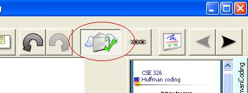
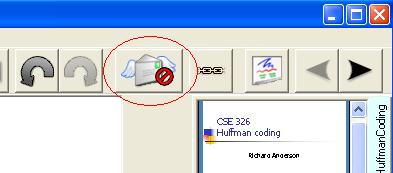
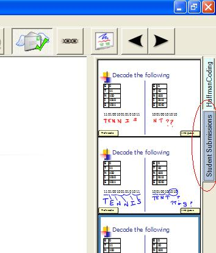
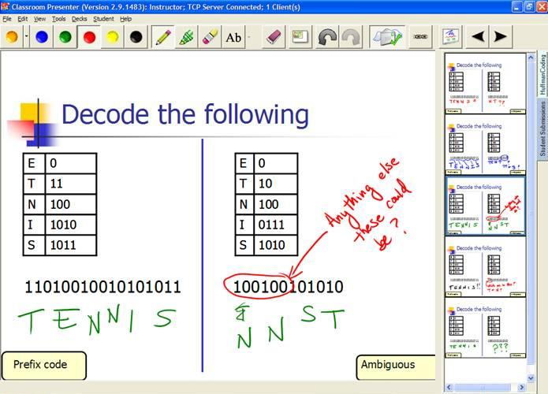
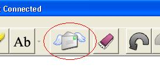

Student Submissions |
|||||
|
GeneralClassroom Presenter's student submissions feature allows students to submit ink and text-annotated slides to the instructor. The instructor may then preview student responses and selectively display them to the class. In order to use student submissions you need to have network connectivity (wired or wireless) and students need to have machines running WindowsXP or Vista with Presenter installed. To take advantage of student inking capabilities, students will need Tablet PCs. See Starting Classroom Presenter for how to connect student devices to the instructor's presentation. You will need to start the instructor in networked mode and start individual student machines in the student role. Student devices connected to the instructor's presentation will receive the instructor's ink and slide transition actions in real time. Students may also annotate their local copy of the slides with their own ink or text notes. Instructor1. Enabling Student Submissions: To use student submissions the instructor should be sure that the student submissions icon shows that submissions are enabled. Clicking the student submissions icon on the instructor machine will toggle between enabling and disabling submissions. Student submissions enabled: Student submissions dis-abled: 2. Examining and Displaying Student Submissions: Students may submit ink from any slide in a slide deck including whiteboard decks. Each time a student hits the submit button, the ink and text notes on the student's copy of the slide will appear as a new slide in a student submissions deck on the instructor's machine. Slides in the student submissions deck can be accessed on the instructor's machine similar to slides in other slide decks. The instructor can preview slides (without displaying them to the class), selectively display them to the class, and annotate student submissions with ink (as seen below in red ink). Student submissions are only sent to the instructor's machine (not to other student devices) and thus can only be viewed on the instructor's machine or displayed on a public display. When the instructor selects and displays a submitted slide from the student submissions deck, it will be displayed on the projector, whether you're projecting from a single machine or a separate machine in the public role. Note that the student machines will not have a copy of the instructor's student submission deck and thus will NOT navigate to student submissions when the instructor does so. In this way students may continue working on an activity on their own copy of the slides while the instructor displays student submissions. Students may also find it useful to compare their own work with what the instructor is displaying to the class. StudentIf student submissions are enabled, students can submit ink and text notes to the instructor by hitting the submit button on their machines: Students may submit ink from any slide in a slide deck including whiteboard decks. Each time a student hits the submit button, the ink and text notes on the student's copy of the slide will appear as a new slide appended to the end of the student submissions deck on the instructor's machine. (Hitting the submit button multiple times will result in multiple copies of the slide appearing in the instructor's student submission deck, it will not replace the original submission.) Student submissions are only sent to the instructor's machine (not to other student devices) and thus can only be viewed on the instructor's machine or displayed on a public display. |
||||